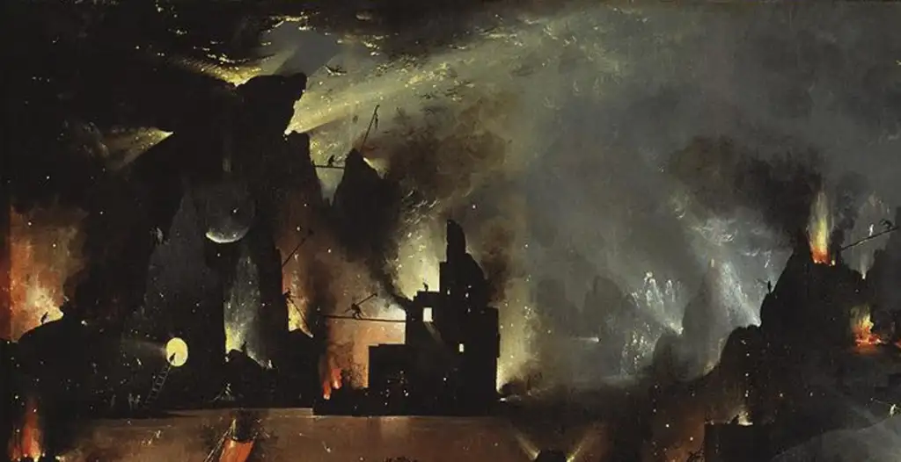

«Pesadillas» —un cuento de terror—.

Caminé por las calles aquella noche sin rumbo fijo, deseando terminar, deseando que todo terminara. Como se suele decir, ya estaba cansado, como se suele decir, ya era suficiente. Así que anduve viajando por múltiples lugares, como sonámbulo, y vi, sin estar dormido, a los monstruos y bestias que habitaban entonces la corteza del mundo, la dura corteza capaz de soportar las cargas más pesadas de la inmundicia y la podredumbre, la blanda corteza capaz de absorber dentro de sí la sangre de cualquiera hasta hacer de ella solo una mancha como si nada hubiera ocurrido, hasta hacer desaparecer la mancha y disolver en el tiempo cualquier afrenta, cualquier tragedia y hacer de todo la misma nada anómala y numinosa.
Era la viva imagen del infierno… “viva imagen”, qué expresión vacía: allí un hombre devoraba un montón de niños y los disolvía en un líquido viscoso hasta hacer de sus ojos una sopa vítrea que miraba. Adelante otros marchaban con los uniformes raídos, la cabeza alzada, los dientes afilados y la barbilla cubierta de las babas del odio germinal hacia la noche y la mañana, hacia todo lo que no fuese aquella muñeca estéril que reposa sobre la loseta de mármol del templo; frente a la colmena cuyos dictados florecen como miel del orden geométrico, y así golpeaban y así mataban con la ira tensa desde las aurículas hasta las manos criminales. Allí vi a mujeres y a hombres, como yo, flotando, entrechocándose como átomos que se rompen con el contacto, que explotan, que se vuelven hacia las entrañas y sacan de la piel la rabia primitiva como partículas elementales, ya solo calor y asco de boca que carcome desnuda los restos humeantes de la vida. Y luego pasaron los cerdos infames que se comían los dedos de los muertos; las granjas circunferentes que brillaban con tanta potencia que revelaban el interior de los cuerpos de quienes bebían de sus fuentes inmaculadas y perfectas, tostándose; los ecos de los ahogados que se agolpaban en las costas enterrados ingrávidos en las hambrientas aguas; de los negadores, de los poetas que gritan al alba una y otra vez, siempre lo mismo de nuevo; y más y más gente, columnas enteras de cuerpos, de animales triturados, de cosas de mil formas y colores.
Y al final dejé de mirar el Jardín de las delicias. El Museo del Prado estaba abarrotado esa noche, que permanecía abierto excepcionalmente. Me desagradaron todas las representaciones de van Aken, su nauseabunda belleza muerta y salí de la sala. Pasé rápidamente por las salas del museo hasta la salida, donde Velázquez permanecía de espaldas al inmenso edificio. Y entonces vi lo de fuera: Caminé por las calles aquella noche sin rumbo fijo, deseando terminar, deseando que todo terminara. Como se suele decir, ya estaba cansado, como se suele decir, ya era suficiente. Así que anduve viajando por múltiples lugares, como sonámbulo, y vi, sin estar dormido, a los monstruos y bestias que habitaban entonces la corteza del mundo1.
- Narración leída con motivo de un ciclo de cuentos de terror en el Instituto la Asunción, octubre de 2026. Por Ángel Martín Santo. ↩︎
Publicado originalmente en PortalEdu. Texto e imágenes conservados de la publicación original.